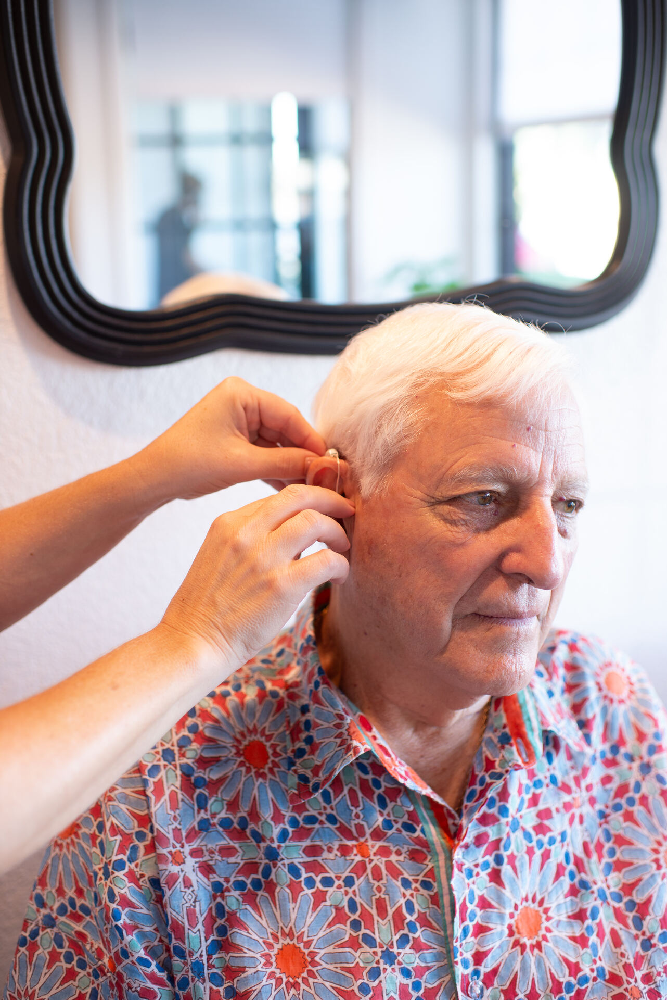
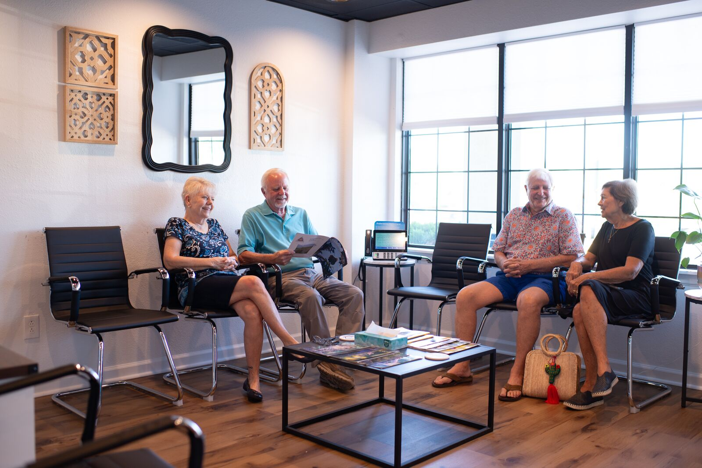
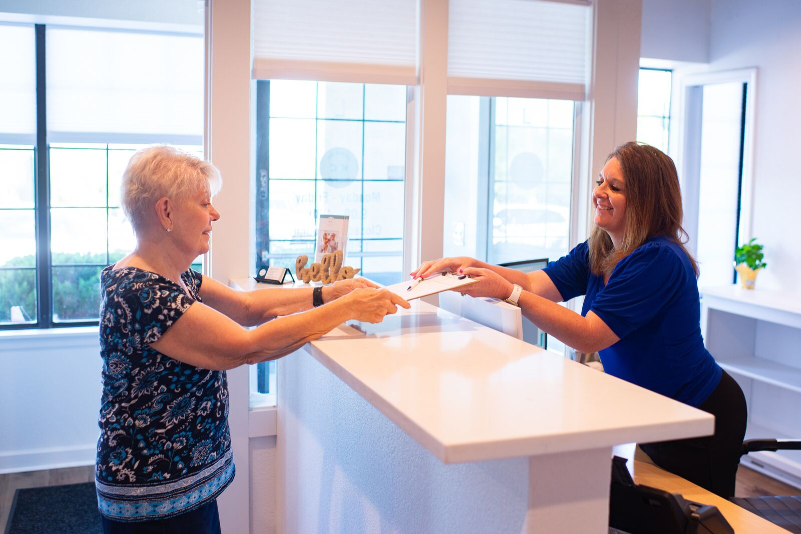
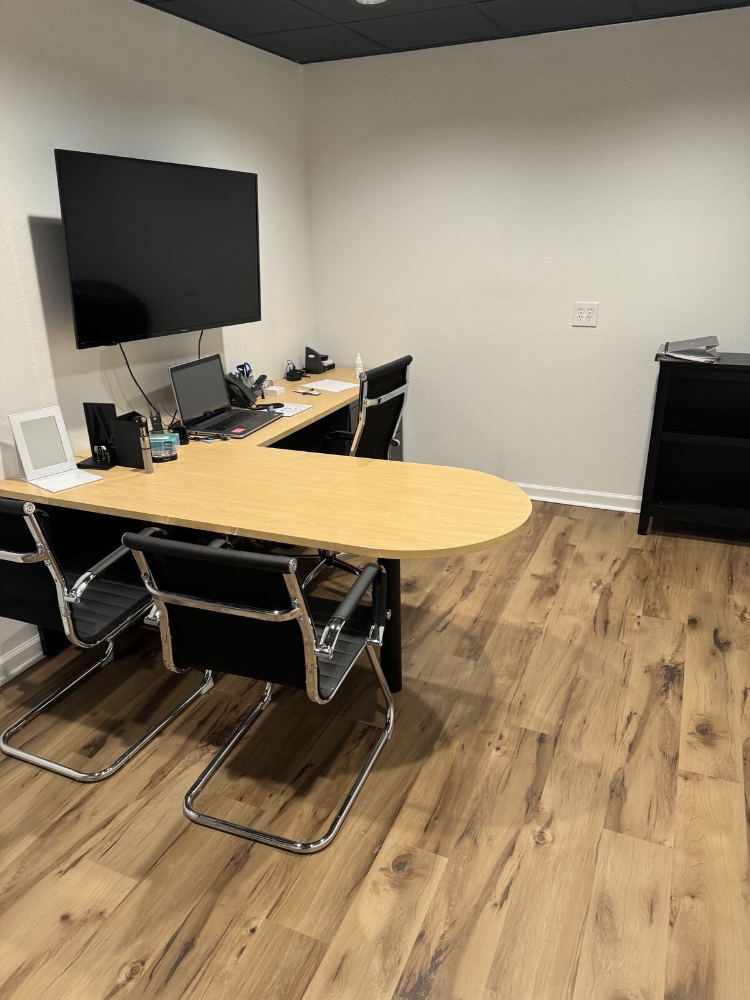
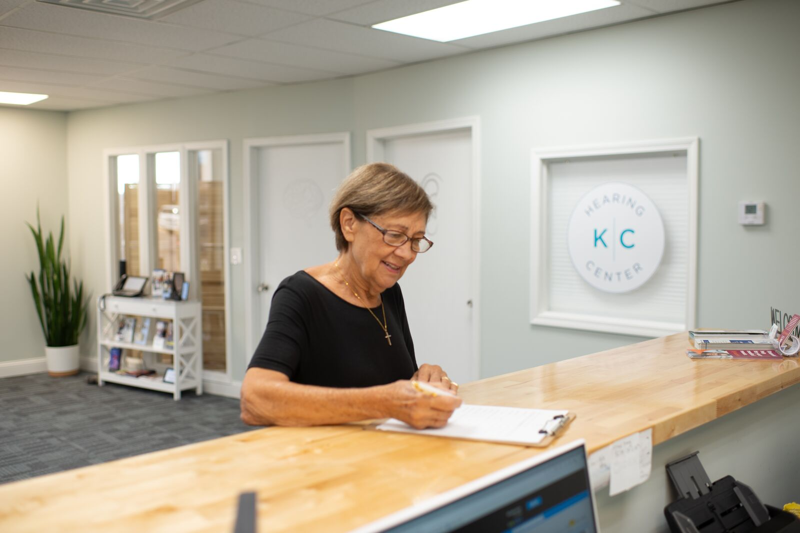
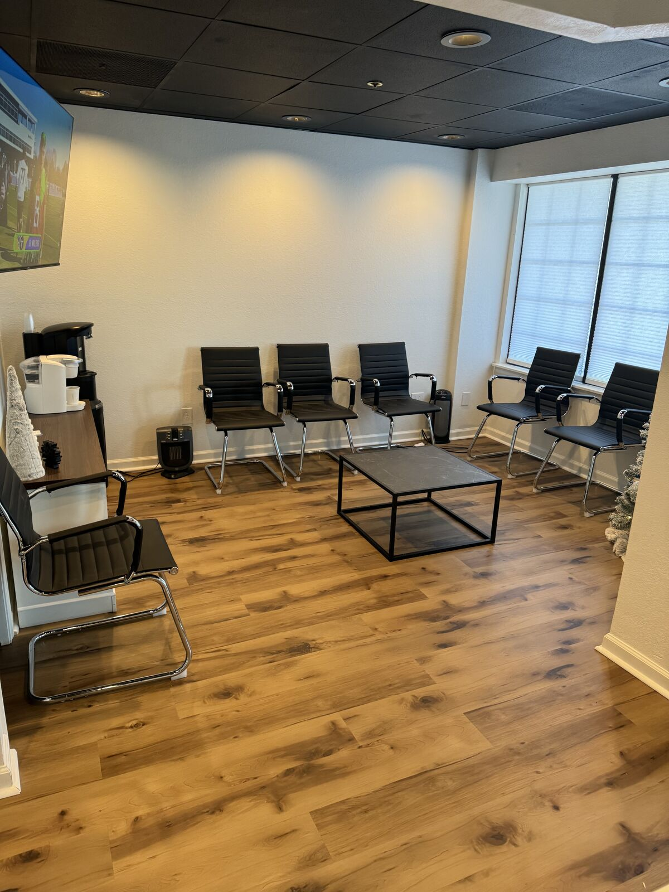
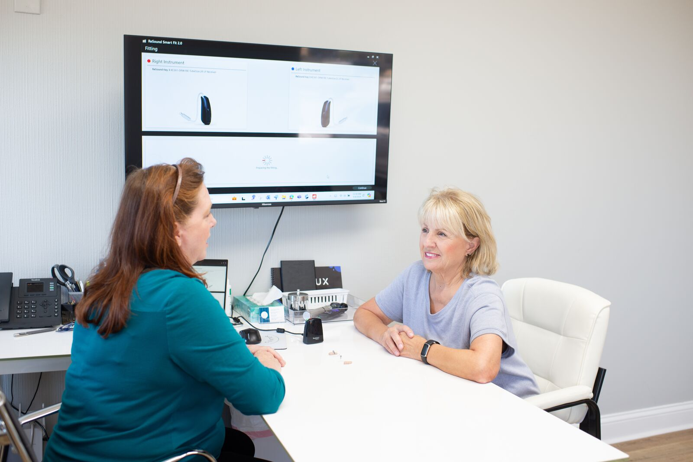

From your first hearing test to long-term care of your devices — every service below is available across our six offices.
At KC Hearing Center, we offer comprehensive hearing tests that diagnose all types of hearing loss. Our hearing examinations are conducted by a highly trained audiologist equipped with the latest technology and expertise to accurately assess your hearing abilities.
We believe that early detection and treatment is key to managing hearing loss and improving the quality of life of our patients. Our hearing tests are painless, non-invasive, and can be completed in a timely manner. We accept most insurance for hearing evaluations.
We understand that the experience of hearing loss can be frustrating and isolating, which is why we emphasize personalized care and support to our patients throughout the testing process and beyond.

Untreated hearing loss has been linked to social isolation, increased risk of falls, and cognitive decline. That is why our treatment approach starts with education: we explain exactly what your audiogram shows, what is driving your hearing loss, and what the most effective options look like for your life.
From there, we build a personalized plan — which may include medical referral, hearing aid fitting, communication strategies, tinnitus management, or auditory training. Your plan evolves with you.
As audiologists, we diagnose hearing loss and prescribe hearing aids. Treating a diagnosed hearing loss properly may require you to wear hearing aids — and how they are fit makes all the difference.
Our team is experienced in the latest fitting techniques and protocols, including real-ear verification. We work closely with every patient to customize devices to their lifestyle — from adjusting volume to fine-tuning programs for work, church, or restaurants.
Hearing aids need routine cleanings and adjustments approximately every three months. We work with most major brands and are fully equipped with the latest tools and techniques to diagnose and repair almost any issue — quickly, and usually without sending your devices away.


The world around us is filled with complex sound environments that are varied and constantly changing. You will inevitably find yourself in situations where hearing aids alone are not sufficient. In such instances, the added support of a smartphone app, an accessory, or an assistive listening device (ALD) can dramatically enhance your experience.
We offer the latest, top-of-the-line accessories to improve accessibility in any environment. From discreet free apps on personal devices to TV streamers, remote mics, captioned phones, and more advanced systems — we can recommend a solution that fits your life and lifestyle.
Auditory training is exercise and therapy for the ear-to-brain connection. After months or years of untreated hearing loss, the auditory pathways between your ears and your brain weaken. Simply putting in new hearing aids does not automatically restore that connection — it needs practice.
Our auditory training programs are structured exercises — some in-office, some at home, some through partner software — that rebuild your brain's ability to distinguish speech in noise, follow a conversation across the table, and hear comfortably in busy rooms again. Most patients see noticeable improvement within a few weeks.
It is one of the highest-impact services we offer, and one of the most overlooked.


Moisture is the #1 day-to-day culprit behind hearing aid glitches. That is why we use the Redux® professional in-office dryer as part of routine care, so your devices perform at their best every day.
What this means for you: faster visits, fewer interruptions, and clearer hearing — because keeping moisture out of your hearing aids is part of our standard of care.
Your ears are as unique as your fingerprints. Whether you are protecting them from loud environments or shaping sound for music or sport, a properly fit custom earmold makes a night-and-day difference in comfort, seal, and acoustic performance.
We offer ear impressions and custom earmolds for:
Visit any of our locations for a quick, painless impression and we will follow up when your custom molds arrive.

A comprehensive hearing evaluation takes under an hour and sets the stage for everything that follows.